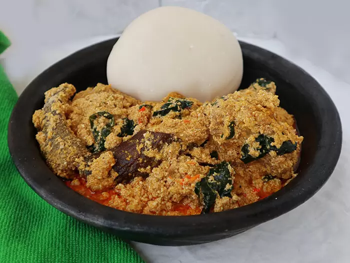

Home
Egusi Soup Recipe

Egusi soup served with pounded yam
Ingredients
- 1kg or 2.2lb beef.
- 4 cups of egusi (melon).
- 1lb or 500g roasted fish.
- Half a cup of ground crayfish.
- A handful of sliced ugu (fluted pumpkin) leaves.
- 2 seasoning cubes.
- Salt to taste.
- Pepper to taste (scotch bonnet).
- One medium-sized stock_fish head (okporoko).
- 20g dawadawa (fermented locust beans) or opkei (local ingredient).
Steps
-
Set a cooking pot on heat and allow to dry. Add the palm oil and allow to heat for 2 minutes, but don't let it bleach.
-
Dissolve the egusi seeds in a cup of water and add to the heated oil.
-
Fry the dissolved egusi seeds in palm oil for 8–10 minutes, stirring constantly to avoid burning.
-
Once the egusi is fried, add 6 cups of water and the cooked meat. Stir, then add the roasted fish, stock fish, ground crayfish, a seasoning cube, and ground scotch bonnet pepper. Cover and allow to boil for 10 minutes.
-
Stir occasionally to avoid burning.
-
Add the already washed bitter leaves and one spoon of ground dawadawa (local ingredient). Taste for salt and pepper.
-
Allow to cook for 10 minutes, stirring occasionally.
-
Serve Egusi soup with garri (eba), or alternatively, with pounded yam.